Hey, I am Mano üáßüá™, a student graduating this year looking for junior positions in game
design. I study a master in game
studies and engineering at the University of Klagenfurt in Austria, and am currently doing an exchange
program in
八王子, Tokyo. I am willing to relocate to anywhere in Europe or Japan.
The game I worked on as an intern Game Design at Dirty Paws
Studio. I helped in designing the progression & reward systems the game will
feature, and
blockouts and the mechanical progression of the tutorial.
More info about the game
Designing these systems was a very good exercise in
communication, as I joined a team in progress and had to understand their vision and
what the various systems I was designing had to achieve. I went through many iterations
of designing, asking and integrating feedback. In the end, I designed the overall
progression of the game and the various reward and progression systems that the game
will feature.
I also helped in designing the tutorial of the game. My
job was to figure out what and how the players learn in the tutorial, and then create
sketches for the levels. I ended up creating 12 levels.
A level I designed. This level aims to teach the player
about branching conduits, and is set up in a way that helps the player figure this
mechanic out without being too explicit.
A review of my internship by my mentor.
Carls trash can
Carls trash can was considered by many to be
the best troll level
yet when it released. This was mostly due to it featuring a 5 minute ending sequence
that subverted almost everything the player had experienced up to that point.
Streamer CarlSagan42 reacting to the ending sequence
YouTuber DGR's playthrough of the level
YouTuber CarlSagan42's playthrough of the level
YouTuber LinkTijger's playthrough of the level
YouTuber Juzcook's playthrough of the level
YouTuber GrandPooBears's playthrough of the level
The Salt Mines
What I consider my best level. It was my attempt at
pushing the genre
and
engine itself to its limits. It uses some mechanism to change up the level between
player deaths, which is usually thought off to be impossible.
This gives a whole new set of expectations to subvert. The level took over 150 hours
to make, and another 50 of playtesting and revising. It takes around one hour to
complete.
Youtuber „Åä„Åã„Çä„Çì/OkarinGames's playthrough of the level
Youtuber CarlSagan42's playthrough of the level
Youtuber FerFigers's playthrough of the level
Youtuber DR.SHOKI's playthrough of the level
Youtuber しゅうゲームズ's playthrough of the level
Youtuber RYOTA☆レコード's playthrough of the level
More levels
and
info
About troll
levels
Many troll levels, including mine use glitches to help
subverting
expectations, and as Nintendo is not a fan of these, troll levels usually get deleted,
hence only the only thing remaining is videos.
A Beesy Week is a
boardgame designed for the Sustainability Game Jam, which had as topic as the name implies
sustainability. The game is a co-op boardgame where players work together as bees to polinate as
many flowers as possible before the end of the week. It was specifically designed to include
children in the target audience. I did the game design of the game.
The main challenge was that our target audience
included kids aged 8-12 years old. Understanding the abilities and what children like was hence
an important part of the design, to make sure the game was intuitive enough and that children
would like it. At the same time, we did not want to forego all complexity, so that adults can
also enjoy the game, and play together with their children. We solved this by mostly creating
vertical complexity, which meant the base game is easy to understand and complete, but the game
allows for optimization of gameplay.
This is reflected in the end condition, which
specifically states "Polinate as many flowers as possible". Initially, the game had a target
that players needed to beat, which introduced a win and loss condition, but after playtesting,
it became evident that this did not work out. It would either be not enjoyable for adults,
because children should be able to beat the game, or the opposite. An open condition allows
players of any skill level to play and enjoy the game, and specifically children to keep playing
and improve, while never feeling like the game punishes you.
Snek.Game
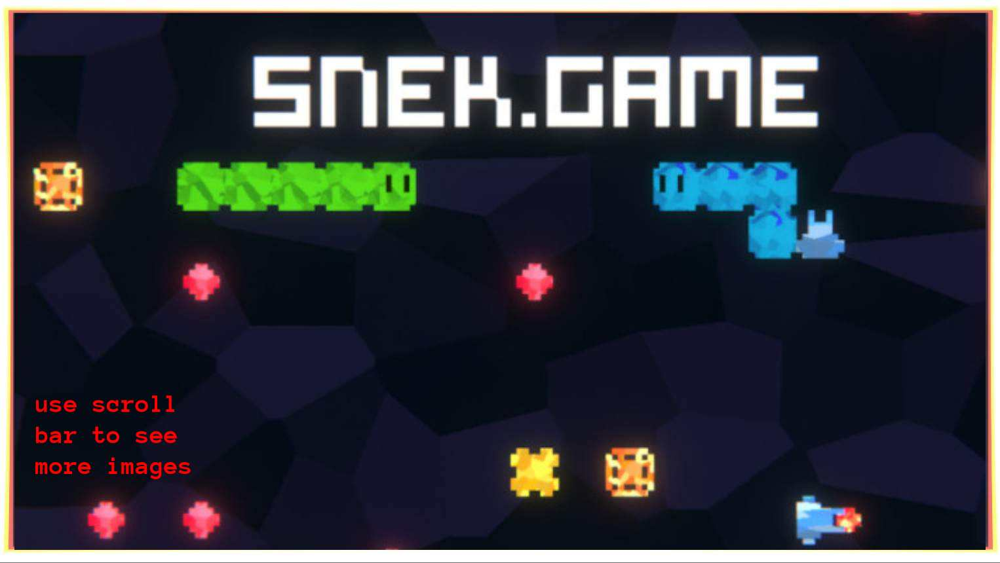
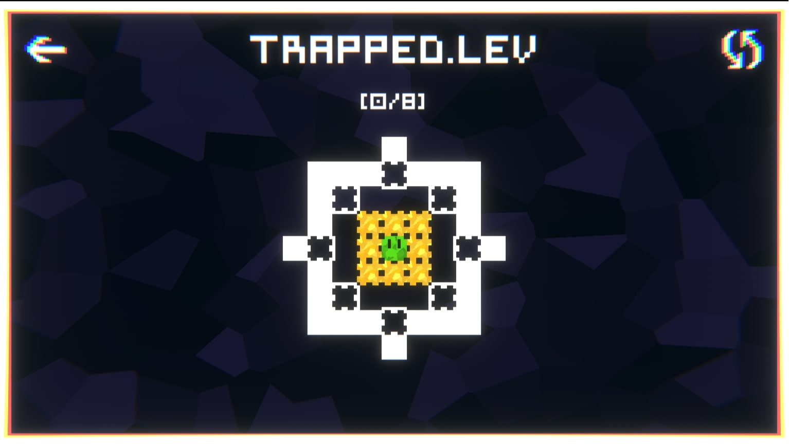
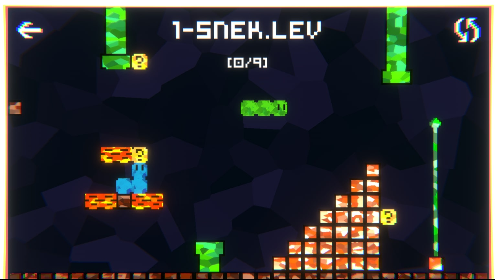
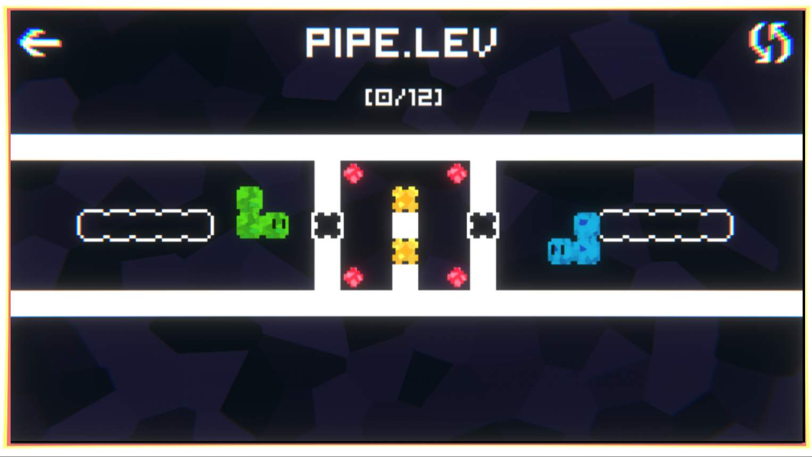
A game made for
the Klagenfurt x Coventry gamejam, and later polished into a small puzzle game. The player plays
as a snek, who has to push boxes around and
eat berries to complete levels. The game was inspired by What The Golf, and much like in its
fashion, every level becomes a bit more ridicilous than the last one. I worked together with two
friends, and designed most of the levels.
We ended up designing around 20 levels 10
unique mechanics, slowly introducing them one by one as to not overwhelm the player. The later
levels also include some mechanics that play off previous mechanics to suprise the player.
Super Mario Maker 2
A 2D platformer level editor in which I
have made many "troll" levels. Troll levels are a special type of level
trying to flip the classic mario formula on its head. They try
to predict what the player will do and punishes them for it, in an
entertaining manner. Combining clever traps with a healthy dose of slapstick, troll
levels aim to constantly subvert the expectations of the player. This type
of level is something of
a happy
accident resulting from the simplistic complexity of the Mario Maker games, and over the
past six years, a large community has grown around them, of which I've had the
pleasure to be a part of. My levels are often considered among the best in this
subgenre, and have been played/seen over 14 million times.
Arguably the most crucial element of
designing such levels is iteration and playtesting, to make sure a
level's predictions
actually match what
players
do and to refine the cues the level gives the player so they don't get lost. The Salt
Mines for example took over 30 revisions, scrapping and rebuilding entire sections many
times based on playtests.
Here are the two
levels that I consider my best
The Salt
Mines
Carls trash
can
Other Projects
These are games that I work on in my free time.
Bagels of War
Bagels of War is a tower
defense battle game, inspired by Plants VS Zombies, Battle Cats and Kingdom Rush. Players have
to survive the enemy onslaught of bagels while building up an economy to finance defensive
structures and build armies of their own. The game features many different units and structures
that players can strategically choose to bring to battle. During battle, players can also level
up their units, allowing for a different approach each level.
This is my main project
at the moment, an indie game scheduled
for release July 2024. Most of the programming and is ready to start making content
for the game, which is what I am currently working on. I am
also working together two artists and a sound designer to design the assets for the
game.
As the game features over
20 different units and structures, over 100 upgrades and multiple systems that increase player
power, this is a very good exercise of balancing, to ensure a smooth difficulty curve,
progression path for the player and many viable strategies are possible.
Gregs Dream
Gregs dream is a
metroidvania that I have worked on with an artist/sound designer friend for over a year. It is
about a young boy named Greg who gets imprisoned in a nightmare and has to find a way
to escape. It is inspired by classic zelda dungeons and other metroidvanias like Hollow Knight.
I do the game and level design, and the programming.
The game currently
features over two hours of gameplay, but still has a long way to go. It was our first attempt at
a bigger, marketable game, but fell prey to scope creep and overambition, hence it currenly lays
dormant in my pile of unfinished projects
Dungeon of the Mad Dungeon Master
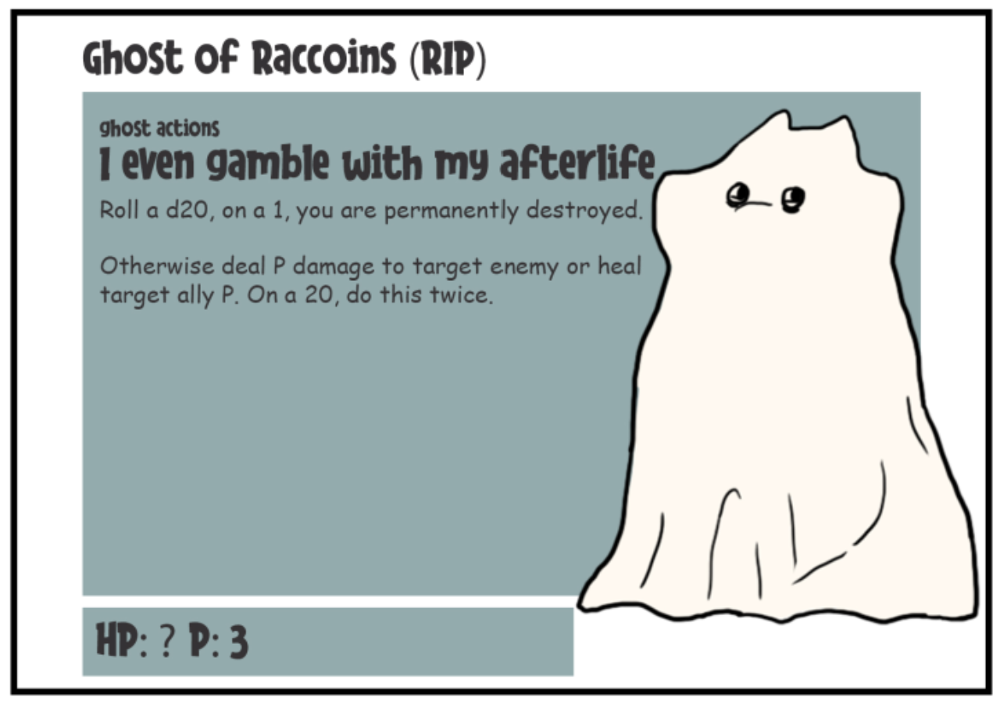
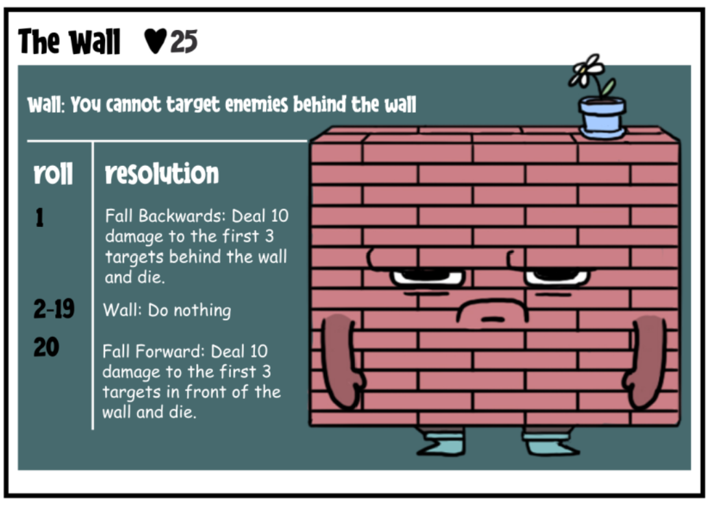
A boardgame designed by
me and a few friends for university. In Dungeon of the Mad Dungeon Master, a party of
adventurers is desperately trying to escape an ever changing dungeon. One player takes up the
role as the dungeon master, while the rest play as adventurers. However, unlike Dungeons and
Dragons, in this game the dungeon master's goal is to actually kill the players by creating the
deadliest dungeon possible. Adventurers will face monsters, activate traps, obtain treasure and
traverse different biomes. The fun doesn't stop when the players die, they turn into ghosts that
can still help their allies from the other side.
I together with a friend
did the game design. We really liked the game as a team, but we heavily underestimated the
logistics and work required to publish a boardgame, so the game never made it past two physical
versions and some playtests. There is ambition to one day pick it up again. DotDM features 4 playable characters with over 50 unique action cards, 8 monsters, 8 treasures and 16 dungeon rooms.
Bertle Royale: The card
game
A physical party game made for the 6th winter KluJam,
themed after Gamebert,
the mascot of the Game Studies and Engineering Masters program.
Bertle royale ended in second place for the Game Design, Fun and Overall categories, and
third place for creativity. I designed the game and the various cards and their
effects.


 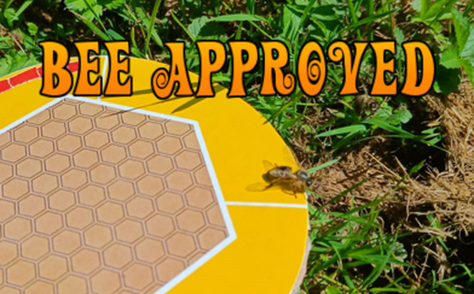
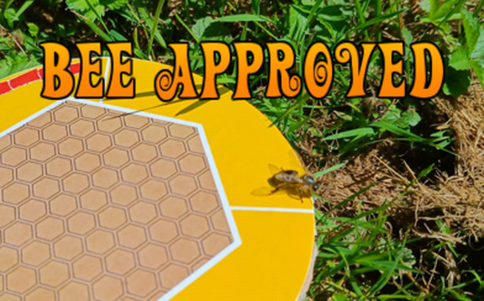
 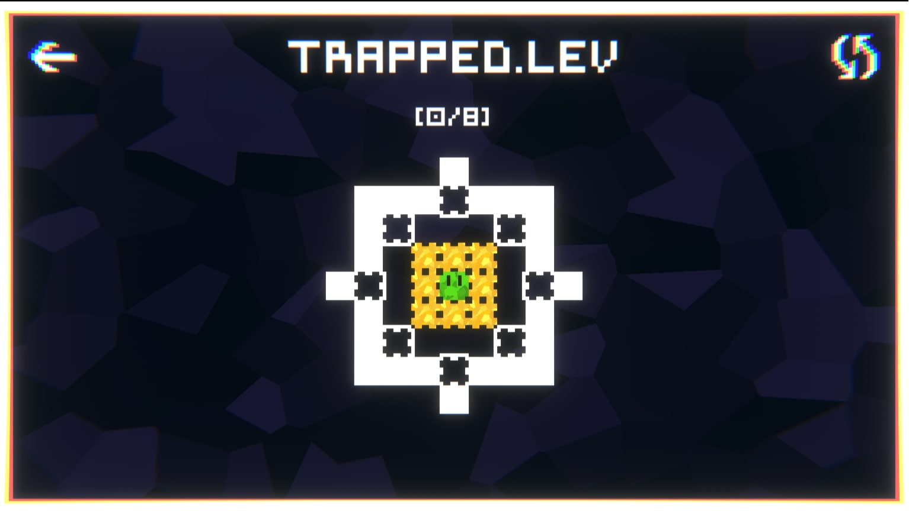
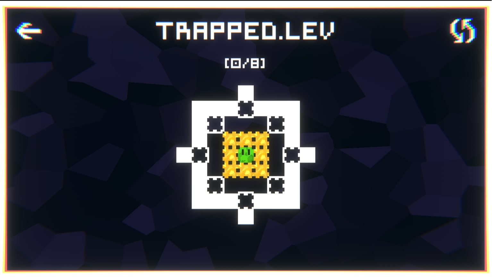
 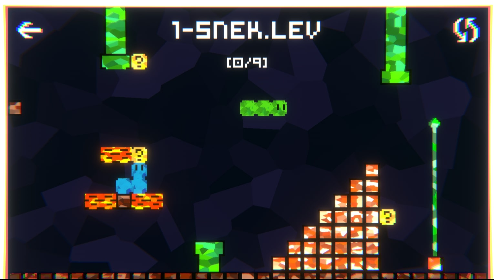
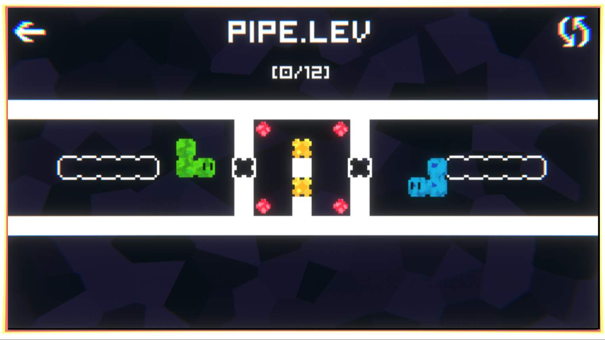
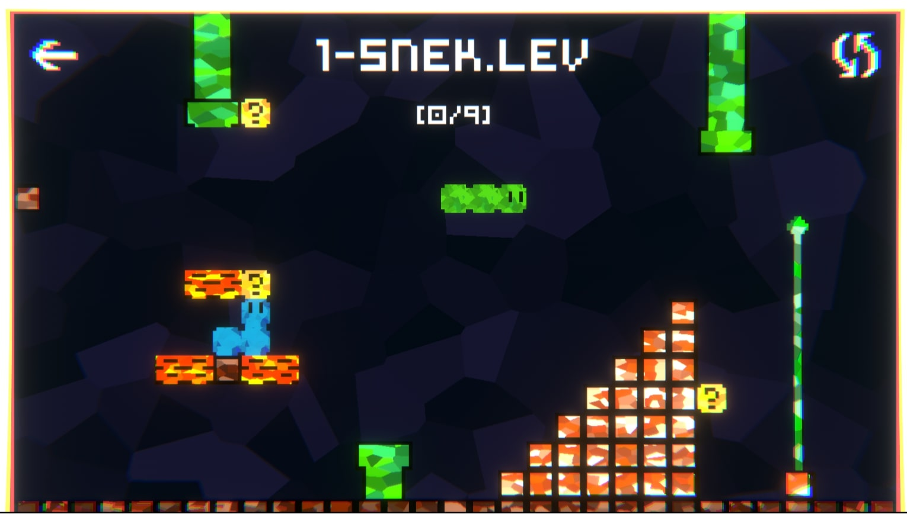
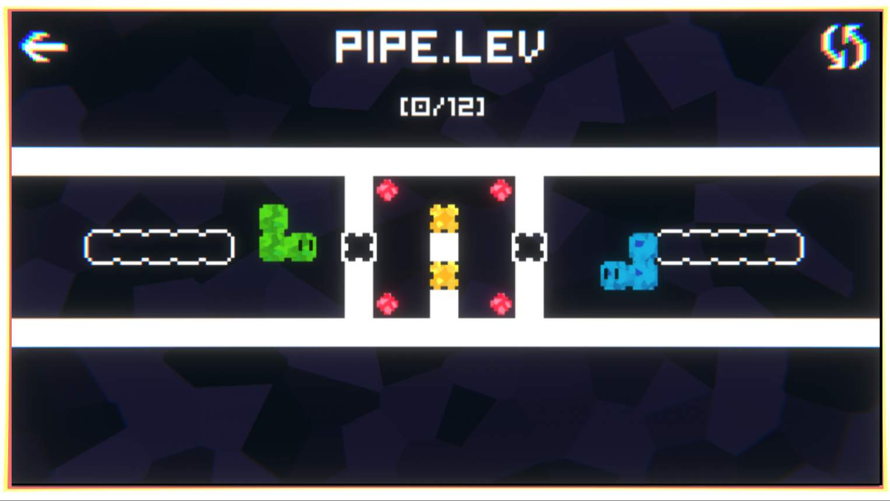


 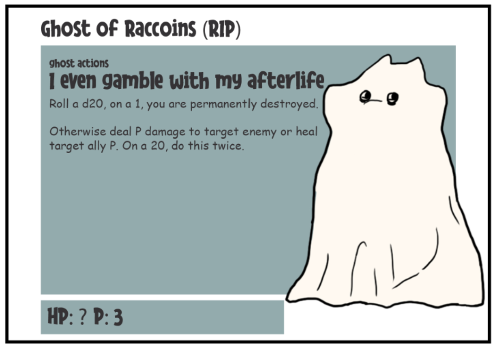
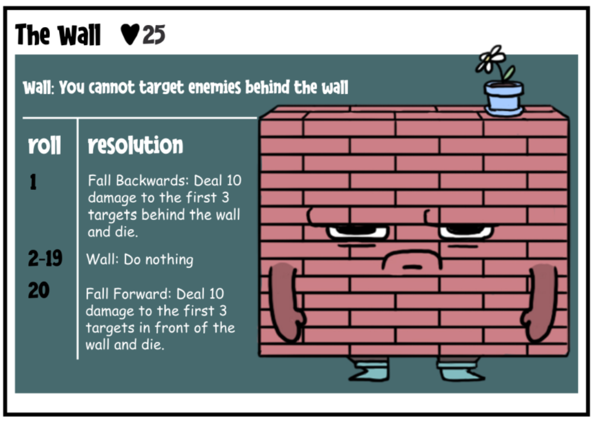
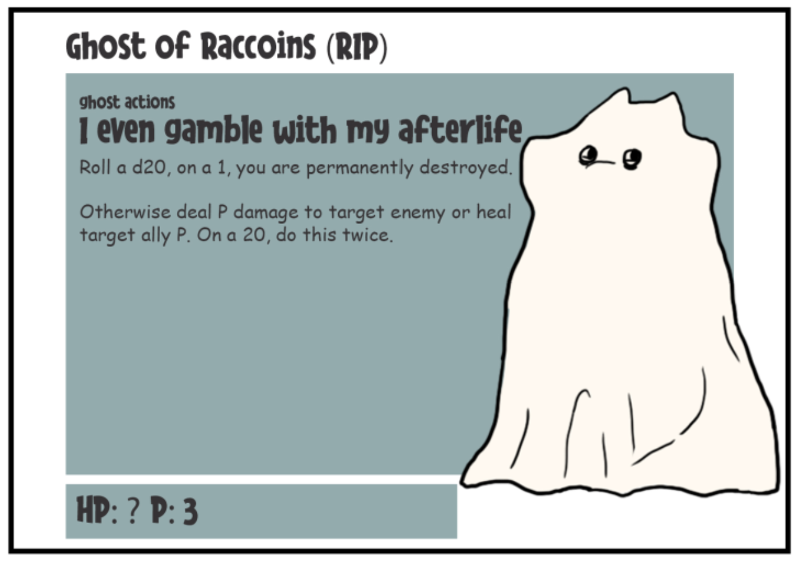
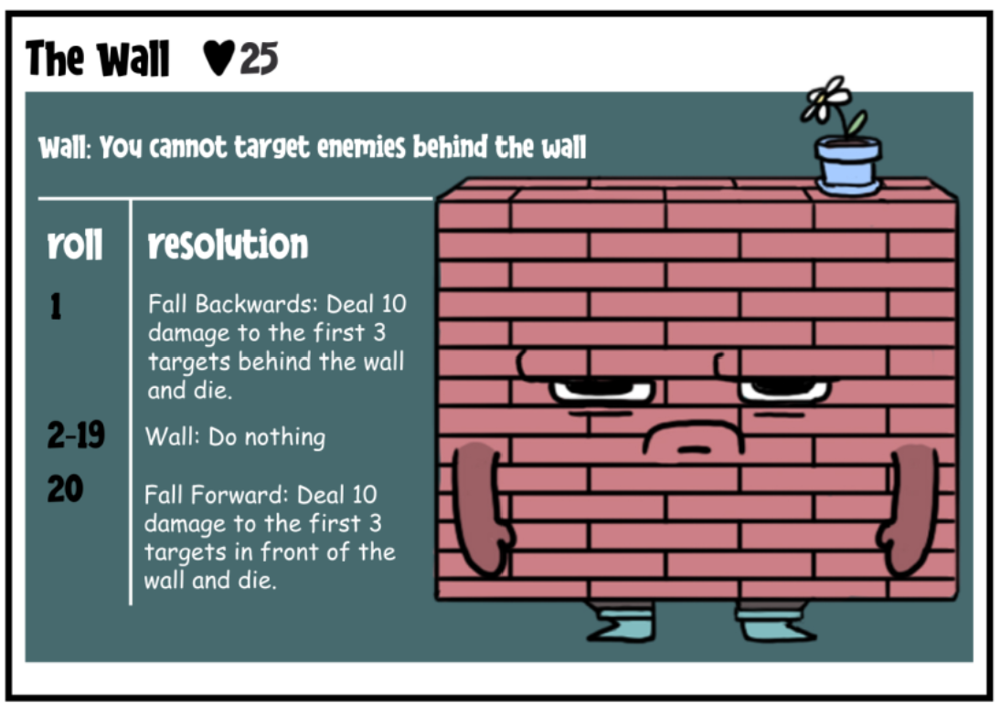